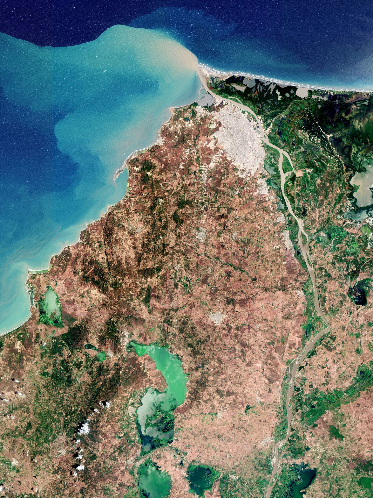
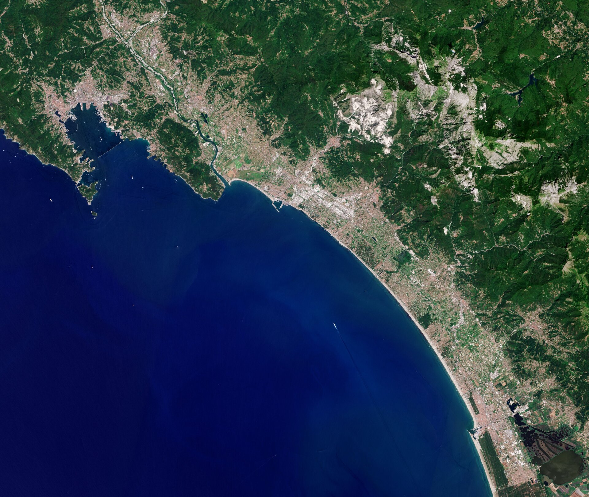
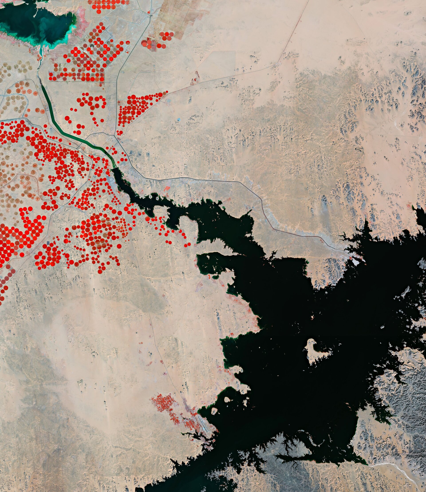

Strona główna przykładowych zobrazowań z projektu "Ziemia z kosmosu" ESA.
BarranquillaKolumbia - 01.04.2022
Misja Copernicus - Sentinel-2
CarraraWłochy - 25.03.2022
Misja Copernicus - Sentinel-2
Jezioro NaseraEgipt - 18.03.2022
Misja Copernicus - Sentinel-2